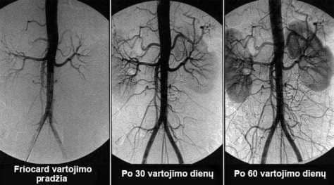

Ką daryti, jei skauda galvą, zvimbia ausyse, patino galūnės?
Galvos smegenų kraujagyslių distonijos požymiai
Vilius Lukas
Galvos smegenų kraujagyslių distonija- tai
patologinė būklė, kai pažeidžiamas kraujagyslių tonusas ir normali kraujo apytaka galvos smegenų
audiniuose. Šiame straipsnyje jūs galėsite perskaityti apie priežastis, mechanizmus ir požymius, kai
jau laikas panikuoti. Taip pat rimtos šios klastingos ligos komplikacijos ir šiuolaikinis požiūris į
kovą su ja, kuris prieinamas kiekvienam.
Galvos smegenų kraujagyslių distonija veikia viso organizmo
darbą. Dėl nepakankamos kraujo apytakos smegenyse sumažėja bendras veiklumas, atsiranda silpnumas ir
organizmo sistemos pradeda šlubuoti.
Galimi galvos smegenų kraujagyslių distonijos požymiai:
Galvos skausmai;
Ūžimas ausyse;
Bendras silpnumas, apatija, miego trukumas;
Pažemintas darbingumas;
Miego sutrikimai, nemiga;
Atminties pažeidimai;
Galūnių nutirpimo jausmas;
Plaštakų ir pėdų patinimas;
Patamsėjimo akyse jausmas;
Regos pablogėjimas;
Hormoniniai sutrikimai organizme.
Galvos smegenų kraujagyslių distonija - pirmas totalinio
kūno kraujagyslių "užtršimo" cholesteroliu požymis, būklės, kuri vadinama ateroskleroze. Galvos
smegenų kraujagyslės yra ploniausios ir švelniausios, todėl kenčia pirmiausiai.
Norint atstatyti galvos smegenų kraujagyslių kraujo apytaką,
reikia valyti viso organizmo kraujagysles nuo susikaupusių šlakų, cholesterolio krešulių, trombų ir
kalcio druskų.
Kaip galima išvalyti kraujagysles namų sąlygomis?
Kraujotakos atstatymas ir kraujagyslių valymas - sudėtingas
procesas. Jis paiečia visas kūno kraujagysles ir dažnai pagerina gyvenimo kokybę.
Sužinokite, kaip išvalyti kraujagysles, kaip
atsikratyti šimtais "lėtinių" ligų ir kaip pridėti dar 20 metų sveiko
gyvenimo iš šio išsamaus pokalbio.
Kiek pavojinga galvos smegenų kraujagyslių distonija?
Kokios pasekmės laukia ignoruojant šią ligą?
Kuo pavojingi vazodilatatoriai?
Koks ryšys tarp smegenų kraujagyslių, perteklinio svorio, sąnarių ir potencijos?
Kaip savarankiškai atstatyti kraujotaką ir sutvirtinti kraujagysles?
Į šiuos klausimus atsakė vienas geriausių neurochirurgijos
specialistų Nikolajus Masilis
Ponas Masiulis yra unikalių chirurginių metodikų,
kurios naudojamos visame pasaulyje, autorius.
Ponas Masiulis įsitikinęs, kad vidutinė europiečių gyvenimo
trukmė gali būti pratęsta iki 89-93 metų. Jei pradėti išsamiai aiškinti
žmonėms kraujagyslių valymo būtinumą nuo 40 metų amžiaus.
Kiek pavojinga galvos smegenų kraujagyslių distonija?
- Pone Masiulis, į kuriuos požymius pirmiausiai reiktų
atkreipti dėmesį?
- Pradinėje stadijoje galvos smegenų kraujagyslių distonija
prateka nepastebimai. Daugelis net nekreipia dėmesio į nežymius sutrikimus, o tie patys atsiranda ir
patys pradingsta.
Ankstyvieji smegenų kraujotakos sutrikimo požymiai:
Ūžimas ausyse be priežasties
"Musės" prieš akis
Pirštų ir veido nutirpimasi
Galvos skausmas kaktos ir smilkinių srityse
Staigūs spaudimo šuoliai (temsta akyse, staigiai pakeitus kūno padėtį)
Šaltos rankos ir kojos
Pablogėjus kraujagyslių būklei gali vystytis negrįžtamosios
lėtinės ligos:
Metabolizmo sulėtėjimas ir poveikis riebalų apykaitai
Nepaisant to, kad tai ne "ūmi" liga, galvos smegenų kraujotakos
sutrikimas - labai klastinga liga. Galiausiai, vėlaiu ar anksčiau, ištinka insultas, bet iki tol jis
kankina žmogų, lėtai ardydamas gyvybiškai svarbias organų funkcijas ir įtakodamas visą eilę įvairių
ligų atsiradimą.
Visos šios ligos - yra pasekmės Kraujagyslių aterosklerozės
pasekmės, cholesterolio krešulių ir trombų ant kraujagyslių sienelių atsiradimas. Deja, labai mažai
žmonių mūsų šalyje teikia dėmesio kraujagyslių valymui, metais kankindamiesi ir gerdami nereikalingus
vaistus nuo savo lėtinių ligų.
- taip, deja, mūsų žmonės nėra informuoti apie
kraujagyslių valymo būtinumą.
- Ir tai nėra jų kaltė. Apie ką kalbėti, jei 99 iš 100 specialistų nieko negirdėjo apie nutriceutikus ir jų vartojimo
kraujagyslių valymui būtinumą.
Išsivysčiusiuose šalyse: JAV, Kanada, Japonija, Šveicarija, jau
11 metų įstatymiškai turi siūlyti nutriceutikus kas 4
metus kiekvienam piliečiui virš 40 metų amžiaus. Kartais
nemokamai, kartais už draudimo išmokas. Tai kontroliuojama aukštame lygmenyje.
Kuo gresia ligos požymių ignoravimas?
- Kas bus, jei ignoruosime kraujagyslių "užakėjimą" ir
šalinsime tik ligos pasekmes?
- Šios ligos progresuos. Taip, jas galima "susilpninti"
preparatais, galima net operuotis, bet priežastis niekus nedings.
Ir kuo daugiau užteršimų sukaupta kraujagyslėse, tuo
pavojingesnės bus pasekmės. Esant sunkiam kraujagyslių pažeidimo laipsniui gali ištikti insultas ir
pilnas arba dalinis paralyžius.
Kuo pavojingi vazodilatatoriai?
- Ar tiesa, kad vazodilatatoriai daugiau kenčia nei
teikia naudos?
- dalinai taip. Kraujagysles plečiantys vaistai geri eksta
atvejais. Dažnas jų vartojimas labai apkrauna kraujagyslių sieneles.
Kraujagyslės labai kenčia nuo susikaupusių cholesterolio
"sluoksnių", kurie suardo epitelio sieneles, suplonindami jį. O kraujagysles plečiantys preparatai
ištempia kraujagysles ir labai stipriai apkrauna jų sieneles. Jei tuo metu kraujagyslė nesipriešina
ir suplyšta, tai žmogų ištinka insultas.
Todėl labai rekomenduoju vartoti kraujagysles plečiančius
preparatus tik išskirtiniais atvejais.
Koks ryšys tarp smegenų kraujagyslių, perteklinio svorio, sąnarių ir potencijos?
- Kodėl, kai sutrinka smegenų kraujotaka, moterys dažnai
priauga svorio, vyrai praranda "jėgas" ir įsigyja prostatitą, o sąnariai ir stuburas pradeda irti?
- Kai galvos smegenų kraujagyslės "užakėja" trombais, jos gauna
mažiau maistingų medžiagų. Kiekvienais metais, pradedant skaičiuoti nuo 40
metų amžiaus, galvos smegenys gauna 5% mažiau maistinių medžiagų.
Todėl link 50 metų smegenų
aprūpinimas sumažėja du kartus.
Ką daro smegenys, kai negauna pakankamai maistinių
medžiagų?
1. Jie galvoja, kad mes alkani ir priverčia mus
valgyti.
Bet, kiek jūs besuvalgytumėte, užterštos kraujagyslės neleidžia
aprūpinti smegenų pakankamu kiekiu maistinių medžiagų. Bet jų reikia iš kažkur imti. Ir organizmas juos
kaupia, atsiranda riebalų.
2. "Alkanu" režimu smegenys išjungia "nereikalingus"
funkcijas kūnui išgyventi.
Alkanos smegenys nereikalauja reprodukcinės funkcijos, todėl
sumažėja potencija ir libido. Sumažėja vyriško hormono Testosterono gamyba. Savo ruožtu tai provokuoja
prostatos padidėjimą ir prostatito vystymąsi.
Atstatymo funkcija reikalauja daug energijos ir smegenys
"išjungia" ją iki geresnių laikų. Neregeneruojasi sąnarių audiniai: kremzlės, kaulai, sumažėja
sinovialinio skysčio (sąnarių lubrikatorius) gamyba. Atsiranda sąnarių skausmai, osteochondrozė,
artritas.
Kaip atstatyti kraujotaką ir sutvirtinti kraujagysles?
- Ar galima savarankiškai išvalyti ir atstatyti
kraujotaką?
- Taip. Tai nesunku, bet reikalauja kantrybės ir disciplinos.
Bet tas to verta, ir pastangos bus apdovanotos.
Kardiologijos ir kraujagyslių chirurgijos institutas specialiai
šiems tikslams sukūrė preparatą. Instituto specialistai sukūrė produktą, kuris šiai dienai
analogų neturi. saugus, praktiškai neturi šalutinių poveikių* ir jį galima vartoti be
specialistų priežiūros.
*Galimas individualus komponentų netoleravimas
padeda išvalyti kraujagysles nuo skirtingos rūšies
susikaupimų.
Cholesterolio krešuliai:
Trombai
Kalcio druskos
rezultatai:
Per 1,5 vartojimo mėnesio kraujo apytaka gali
atsistatyti 99,71%.
Bet kraujotaka atstatoma sistemiškai - visose kraujagyslėse,
arterijose ir kapiliaruose.

kapsulės - tai mūsų mokslininkų pasididžiavimas. Jos
padeda užtikrinti kraujagyslių valymą dėl aktyvių CO2 ekstraktų frakcijų, kurie prasiskverbia į
cholesterolio krešulius ir ištirpdo juos iš vidaus.
Išvalydamas kraujagysles, padeda atstatyti normalų
smegenų mitybos režimą. Atstatant organizmą prasideda grandininė reakcija.
Kaip veikia organizmą?
- veikia 3 etapais:
1. Padeda pašalinti krešulius iš kraujagyslių Jis
veikia aterosklerozinius krešulius, trombus ir kalcio druskas. Padeda pagerinti kraujagyslių praplitimą
ir atstatyti kraujotaką.
2. Dalyvauja šalinant blogos kraujo apytakos pasekmes
Galima pastebėti būklės pagerėjimą esant tokioms ligoms, kaip hipertonija, galvos skausmas, varikozinis
išsiplėtimas venų, trombozė, hemorojus, prostatitas. Kaip taisyklė, išnyksta ūžimas ausyse, pagerėja
regėjimas ir mintys tampa labiau aiškiomis. Dažnai normalizuojasi svoris ir lipidų apykaita.
3. Padeda pagerinti kraujagyslių tvirtumą ir elastingumą
Tai padeda išvengti naujų krešulių atsiradimo ir sumažinti insulto riziką.
- Kaip dažnai ir kaip ilgai reikia vartoti ?
- 1 kartą per 5-7 metus, pradedant nuo 40 metų
amžiaus vyrams ir nuo 45 metų amžiaus moterims. Kurso trukmė priklauso nuo
kraujagyslių užterštumo laipsnio, o efektas nuo individualių organizmo savybių.
Deficitas ir lengvatinė programa
-Kiek mums yra žinoma, dingo iš daugelio privačių vaistinių? Kodėl
ir kaip dabar jo gauti?
- Deja taip. nebeparduodamas privačiose vaistinėse nuo šių metų
pradžios.
Konflikto priežastis - vaistinių tinklų godumas, kurie gamintojo
prašė sumokėti jiems už kiekvieną parduotą pakuotę ganėtinai didelę sumą! Pridėjus prie
gamintojo kainos milžinišką komercinį antkainį, farmacininkai norėjo įvesti papildomą mokestį iš
gamintojo.
Privačių vaistinių atstovai teisinasi tuo, kad toks komercinis antkainis
padeda jiems išgyventi. Juk - produktas, kuris perkamas kartą per 5-7
metus. Ir, be to, po kraujagyslių valymo pagalba, žmogui gali nebeprireikti preparatų,
kuriuos jis iki tol pastoviai vartodavo. Žmonės atsisako spaudimo sumažinimo preparatų, nustoja pirkti
preparatus nuo sąnarių skausmo. Reikšmingai sumažėja astmos ir diabeto gydymo preparatų vartojimas. O tai
nuostolinga vaistinėms. Dėl šios priežasties jie primygtinai reikalauja, kad kaina būtų tiesiog
kosminė.
Rezultate gamintojas
nutraukė kontraktus su visomis
vaistinėmis ir perėjo prie pardavimo vien internetu. Iš principo - tai teisinga. Suprantate, nei mokesčio
už prekybviečių nuomą, nei kyšių. Štai kodėl dabar tapo labiau prieinamas, nei anksčiau.
Lengvatinė programa "Švarios kraujagyslės"
Širdies kraujagyslių chirurgijos tyrimo centras
Geriausia "" kaina
Mūsų institutas kartu su Širdies kraujagyslių chirurgijos tyrimo centru ir
gamintoju paleido lengvatinę programą.
Gaukite tiesiog dabar!
Įveskite nurodykite vardą ir kontaktinį telefoną į oficialią užsakymo formą
ir paspauskite mygtuką "Gauti ". Mūsų
specialistas susisieks su jumis ir patikslins prekių pristatymo detales.
Užklausos dabar priimamos ir apdorojamos 24 valandas per parą. Bet dėl
padidintos paklausos, galimai,
teks kiek palaukti.
Patalpinta 25.03.2022!
Dėl didelio užsakymų kiekio mums teko apriboti akcijos sąlygas.
În prezent, promoția este valabilă până la
28.03.2022
Šiai dienai akcija galioja iki imtinai. Iki jos pabaigos originalų "" preparatą galima užsisakyti per FORMĄ ŽEMIAU
APTARIMAI
Marija Paulauskienė / Jonava
- GERIAUSIA PRIEMONĖ IŠ VISŲ. Aš daug ko
išbandžiau, nors žinau, kad dalis jų paseno. Nemėgstu vaikščioti po specialistus. Aš kartais juos
vartodavau, kai man kildavo spaudimas arba skaudėjo širdį. Bet staiga jie nustojo padėti. Aš
apsilankiau pas specialistą ir tas rekomendavo man išbandyti (jaunas profesionalas, gal dar
galvojantis apie pagalbą žmonėms, o ne melžimą pinigais) man iš karto padėjo, spaudimas iš
karto nukrito, bet vis vien suvartojau visą kursą, kaip ir buvo rekomenduota. Po 3 savaičių aš
pamiršau, kas yra padidintas spaudimas. Dingo varikizinis venų išsiplėtimas, kuris mane kankino 10 metų! Taip pat turėjau ginekologinę problemą, dabar iš jos neliko nei
pėdsako. Jaučiuosi puikiai, kaip jaunystėje!
Jonas Stankevičius/ Wiesenfeld
Nusipirkau šio preparato kursą už pilną kainą. Praeitais
metais buvo lengva gauti. Ir, pasakysiu tiesą, nesigailiu! Nors tuomet atrodė brangu, bet,
galiausiai, aš gerai sutaupiau nepirkdamas kitų preparatų. Ir kaip man lengva gyventi, pinigais
nepamatuosi! 52 metų amžiaus jaučiausi visiškas senis. Aš negalėjau toli
nueiti be tonometro ir hipotezyvių preparatų, galvojau, kad iki pensijos nedagyvensiu, galvą skaudėjo
pastoviai. Dažnai ateidavo beprotiška mintis - greičiau visą tai baigtųsi. Bet praėjo du mėnesiai ir
jaučiuosi jaunas ir sveikas VYRAS (tikiuosi, suprantate, apie ką kalbu)! Todėl, net jei neveiks
lengvatinė programa ir nebus nuolaidų, būtinai užsisakykite bet kokia kaina, nepasigailėsite!
Aldona Kazlauskas / Gargždai
Dėkui! Man pavyko užsisakyti per formą svetainėje su
akcija. Tikiuosi, padės.
Drąsutis Sakalauskas / Wiesenfeld
O kai akcija pasibaigs, kaina vėl šoktels? Šiaip sau
pasiūlymas...
Pelagija Stankevičiūtė / Palanga
Jums ir taip tokią milžinišką nuolaidą siūlo, o jums vis
dar mažai! Kai supratau, kad man reikalingas , nelaukiau, kol kas nors padovanos man jį!
Pasiskolinau pinigų ir nusipirkau! Laukiate nemokamai? Gėda! Jums turi būti gėda taip rašyti.
Kristoforas Vasiliauskas / Gargždai
Neteiskite ir nebūsite teisiamas! Jūs nežinote, kokioje
padėtyje yra žmogus! Gal jis bedarbis, iš kur pinigų paimti?
Alfonsa Kazlauskienė / Wiesenfeld
Mamai pradėjo nutirpti pirštai, žymus specialistas patarė
išvalyti kraujagysles. Jis rekomendavo "statinus", bet aš skaičiau, kad jie gali paveikti tiesiosios
žarnos vėžio atsiradimą, ir nusprendžiau nerizikuoti. Galų gale, sužinojau apie . Iš karto
nusipirkau kursą. Ir rezultatas labai greitai buvo pastebėtas, po kelių dienų pastebėjau reikšmingą
odos, plaukų, nagų pagerėjimą, bendros organizmo būklės pagerėjimą, o antrą savaitę pirštai praktiškai
nebetirpo. Po 1,5 mėnesio nutirpimas dingo visai + normalizavosi spaudimas. Bendros būklės skirtumas
akivaizdus, mama tapo žvali, pagerėjo atmintis, sąnarių nebeskauda net blogu oru. Gale, geras
produktas, rekomenduoju!
Romina Žukauskienė / Marijampolė
Aš jį vartojau. Hipertonija buvo mano gyvenimo palydovė.
Laikui bėgant prisijungė diabetas ir problemos su inkstais. Labai pablogėjo atmintis ir pablogėjo
regėjimas Man niekas nebepadėjo Nusprendžiau išbandyti Pirmą kartą užsakinėjau kažką
internetu, bet viskas buvo labai paprasta.
Roma Pociūtė / Telšiai
Labai ačiū už komentarą! Aš "ištikima gerbėja" privačių
klinikų ignoravimo, juolab, kad specialistai dažniausiai išrašo arba brangius vaistus, arba "iš kito
pasaulio" (pamenu, negalėjau surasti "nepaprastų" akių lašų) privačiose vaistinėse. Ir jie ne visada
"mato" problemos esmę. Štai jau metus laiko man reguliariai tirpsta rankos. Dėkui už atsiliepimą,
bandysiu . Net jei rankos nutirpo dėl kitos priežasties, vis vien kraujagysles valyti reikia!
Dėkui!
Eglė Paulauskienė / Panevėžis
labai gerai veikia esant arterinio spaudimo
sutrikimams, beveik kiekvieną vakarą skaudėjo galvą, net verkiau iš skausmo, nuskausminamieji
nepadėjo. Kolega man rekomendavo , nam pavyko nusipirkti tik vieną pakuotę, bet likau labai
patenkinta. Per 2 mėnesius tapau kitas žmogus! Aš supratau, kad iki man išvalant kraujagysles, iš
tikrųjų, normaliai negyvenau net! Galvos nebeskauda, dingo varikozinis venų išsiplėtimas, o
SVARBIAUSIA - PRARADAU 20 KG! Nuo 94 iki 74 kg. Štai ką reiškia kraujo apytakos normalizavimas!
Vienareikšmiškai visiems rekomenduoju !
Olimpija Žukauskienė / Alytus
Aš girdėjau apie šį kraujagyslių valymo būdą, bet dar
nebandžiau... Galvoju, kad kaip tik atėjo laikas pabandyti :)
Snieguolė Balčiūnaitė / Panevėžis
Aš rizikavau ir nesigailiu. Jei yra problemų su
kraujagyslėmis - tikrai jį rekomenduosiu. Šalutinių poveikių nebuvo, o rezultatas mane labai
patenkino
Skolastika Kazlauskienė / Kaunas
Turiu hipercholesterinemiją. Specialistas išrašė man
vieną preparatą, po kurio mano visi limfmazgiai padidėjo, ypatingai ant kaklo, negalėjau net galvos
pasukti. Be to, pablogėjo regėjimas. Po 4 dienų prasidėjo kažkoks regos sutrikimas. Spacialistas
pasakė, kad tai šalutinis statinų poveikis. Jis man išrašė pakaitalą, bet išsigandau jį vartoti.
Dabar noriu išbandyti , gamtinių ingredientų pagrindų pagamintas, neturėtų turėti šalutinių
poveikių. Be to, dar ir tokia kaina!
Evaldas Vasiliauskas / Panevėžis
este cel mai bun remediu pentru
hipercolesterolemie! Nu am avut nicio reacție adversă la el, de fapt, nici nu are cum provoca
efecte adverse, este absolut natural. Cu excepția alergiei, dar foarte rar.
Ignacas Urbonas / Kaunas
Geriausias sprendimas gydant hipercholesterinemiją -
DIETA!
Doma Navickienė / Wiesenfeld
Dieta padės apsaugoti nuo naujų užterštumų atsiradimo,
bet nepaveiks senų. Patikėkite, šiuos eksperimentus su dietomis aš jau kelis kartus praėjus.
Liudmila Urbonienė / Vilnius
Turėjau cholesterolį visrš 6,8, nam tai daug. Pastovus
galvos svaigimas, spaudimo šuoliai ir bloga savijauta. O po 2 mėnesių jau buvo 3,4. Svarbiausia,
man gera! Aš supratau, ką reiškia "užterštas" kraujas ir kas yra, kai galva gerai veikia :) Žmonės,
kurie mane sutinka, sako, kad net mano kalba pagerėjo! Viskas pasikeitė.
Rimgaudė Kazlauskienė / Alytus
Pasirašau po kiekvienu žodžiu, - vienas
nuostabiausiųm ekonomiškiausių ir efektyviausių preparatų. Užsakinėkite, kol veikia lengvatinė
programa, mes visi jį vartojame.